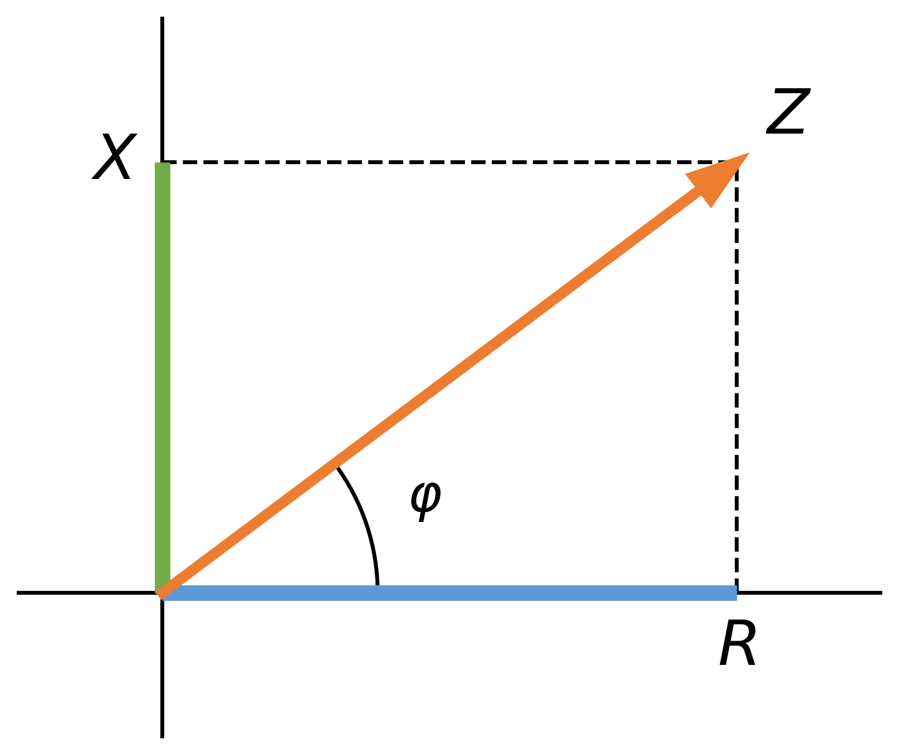
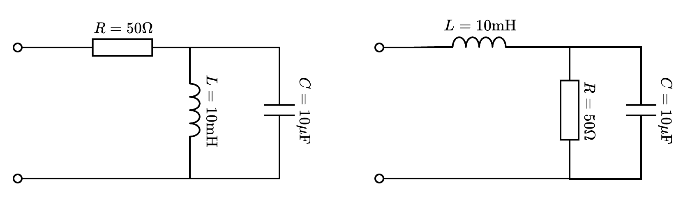
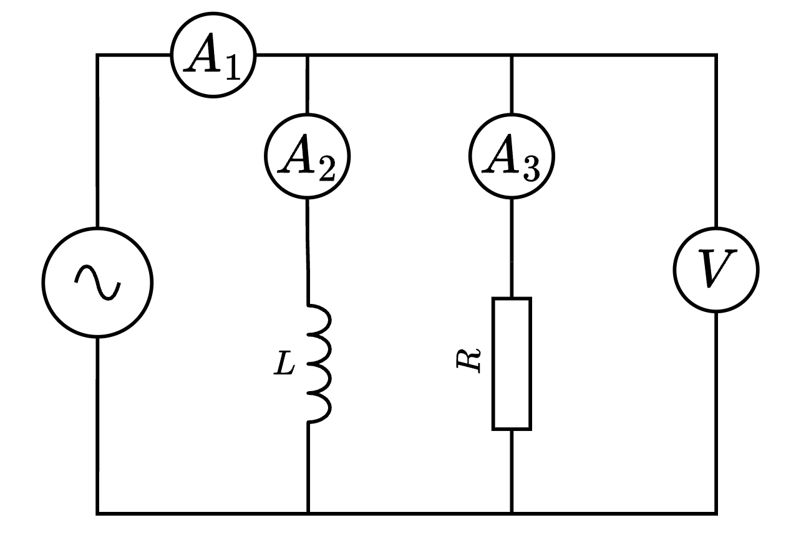

El concepto de impedancia es una generalización del concepto de resistencia. Hemos visto que en CA los elementos conectados en el circuito, en general, introducen un desfase entre la intensidad y la tensión. Este desfase hace que no haya una proporcionalidad entre los valores instantáneos de intensidad y tensión, como ocurría en corriente continua.
No se cumple la ley de Ohm, tal y como la conocíamos, con los valores instantáneos \(i(t)\) y \(v(t)\). Sin embargo, esta proporcionalidad sí existe entre los fasores, y también entre los valores máximos \(U_0\) e \(I_0\), o los valores eficaces \(U\), \(I\). Esto hace que podamos expresar la ley de Ohm con estos valores.
La magnitud que relaciona los valores máximos (y los eficaces) de tensión e intensidad en un circuito, se denomina impedancia (\(Z\)), y se mide en ohmios.
La resistencia eléctrica de un conductor se define como la oposición que ofrece al paso de una corriente eléctrica. Cuando la corriente que atraviesa a un conductor es una corriente sinusoidal, el concepto de resistencia se generaliza a impedancia.
La impedancia se representa con la letra \(\vec{Z}\). Consideremos una impedancia \(\vec{Z}\) alimentada por una señal sinusoidal de valor eficaz \(U\), fase inicial \(\varphi_U\) y pulsación \(\omega\), tal como se muestra en la figura:

La tensión en la impedancia, que es la de la fuente, representada en forma de fasor es: \[\vec{U} = \sqrt{2}U \phase \varphi_U\]
La intensidad que circula por la impedancia tiene un valor eficaz \(I\) y un desfase \(\varphi_I\). Representada en forma de fasor la intensidad es: \[\vec{I} = \sqrt{2}I \phase \varphi_I\]
El cociente entre el fasor tensión y el fasor intensidad representa la impedancia. Expresado matemáticamente es:
\[ \vec{Z}=\frac{\vec{U}}{\vec{I}}=\frac{\sqrt{2}U \phase \varphi_U}{\sqrt{2}I \phase \varphi_I}=\frac{U}{I}\phase {\varphi_U-\varphi_I} \]
4.0.1 La Ley de Ohm Generalizada
De forma análoga a la corriente continua, en corriente alterna existe una relación lineal fundamental entre la tensión y la intensidad, pero operando con números complejos (fasores).
Esta expresión vectorial implica dos igualdades escalares separadas:
- En Módulos: La relación entre los valores eficaces. \[I = \frac{U}{|\vec{Z}|} = \frac{U}{Z}\]
- En Argumentos (Ángulos): El desfase de la intensidad es el de la tensión menos el de la impedancia. \[\varphi_I = \varphi_U - \varphi_Z\]
4.1 Triángulo de impedancias
Si dibujamos ese vector, podremos ver gráficamente que la componente horizontal correspondería con la resistencia y la vertical con la reactancia (si es positiva sería inductiva y si es negativa sería capacitiva) del circuito. Esta representación se denomina “triángulo de impedancias” y tiene este aspecto:

Viendo esta imagen podemos concluir que:
A partir de la impedancia, podemos calcular la resistencia y la reactancia: \[ R=Z \cdot \cos \varphi \] \[ X=Z \cdot \sen \varphi \]
A partir de la resistencia y la reactancia, podemos calcular la impedancia: \[ |\vec{Z}|=Z=\sqrt{R^2+X^2} \] \[ \varphi = \arctan \frac{X}{R} \]
4.2 Representación compleja de la impedancia
Teniendo en cuenta que el eje horizontal es el eje real y el eje vertical es el eje imaginario, podemos representar el vector impedancia como un número complejo de la forma: \[ \vec{Z} = R + \mathrm{j} \cdot X \]
Recordemos que:
- \(R\) es la resistencia: se mide en ohmios (\(\mathrm{\omega}\)) y se puede calcular como \(R=Z \cdot \cos \varphi\).
- \(X\) es la reactancia: se mide también en ohmios (\(\mathrm{\omega}\)) y se puede calcular como \(R=Z \cdot \sen \varphi\). Según el valor que tome la reactancia, la impedancia puede ser:
- Impedancia inductiva: cuando \(X>0\) y, por lo tanto \(\varphi >0\), la tensión está en avance con respecto a la intensidad.
- Impedancia capacitiva: cuando \(X<0\) y, por lo tanto, \(\varphi <0\), la tensión está en retraso con respecto a la intensidad o, lo que lo mismo, la intensidad va por delante de la tensión.
Determina el valor de la resistencia y reactancia de una impedancia que está sometida a una tensión de 220 V y por la que circula una intensidad de 10 A. Se sabe que la tensión está adelantada 30º con respecto a la intensidad.
Solución:
Aplicando la definición de impedancia (en módulos), tenemos: \[Z = \frac{U}{I} = \frac{220}{10} = 22 \ \Omega\]
Tenemos una parte de la impedancia, pero falta saber qué desfase existe. Este dato nos lo dan con el desfase entre la tensión e intensidad, \(\varphi = \varphi_U - \varphi_I\), así \(\varphi = 30^\circ\). La impedancia expresada en forma polar vectorial es: \[\vec{Z} = 22 \phase 30^\circ \ \Omega\]
Para obtener \(R\) y \(X\) hacemos: \[ \begin{aligned} R &= Z \cdot \cos \varphi = 22 \cdot \cos(30^\circ) = 11\sqrt{3} \ \Omega \\ X &= Z \cdot \sen \varphi = 22 \cdot \sen(30^\circ) = 11 \ \Omega \end{aligned} \quad \Rightarrow \quad \boxed{ \begin{aligned} R &= 11 \cdot \sqrt{3} \ \Omega \\ X &= 11 \ \Omega \end{aligned} } \]
Se trata de una reactancia inductiva.
Para trabajar con impedancias usaremos fasores y números complejos continuamente. Si no recuerdas cómo operar con ellos (suma, producto, paso a polar…), consulta el Anexo de Matemáticas al final del libro.
4.3 Asociación de impedancias
Las impedancias se pueden asociar de la misma forma en que se asociaban las resistencias: asociación en serie, en paralelo y mixta.
Asociación en serie: la impedancia equivalente es la suma vectorial de las impedancias parciales. \[ \vec{Z}_T=\vec{Z}_1+\vec{Z}_2+\vec{Z}_3+... \]
Asociación en paralelo: la inversa de la impedancia equivalente es la suma de las inversas de las impedancias parciales, es decir: \[ \frac{1}{\vec{Z}_T}=\frac{1}{\vec{Z}_1}+\frac{1}{\vec{Z}_2}+\frac{1}{\vec{Z}_3}+... \]
Asociación mixta: es una combinación de serie y paralelo. Aunque veremos algunos casos, serán muy sencillos y los resolveremos como serie puro y luego paralelo o viceversa.
Dada una resistencia de 5 ohmios y una inductancia de 50 mH que están trabajando a 50 Hz, calcula la impedancia equivalente en los siguientes casos:
a) Cuando están conectadas en serie. b) Cuando están conectadas en paralelo.
Soluciones:
Lo primero es calcular el valor de \(X_L\): \[X_L = \omega \cdot L = 2 \cdot \pi \cdot f \cdot L = 2 \cdot \pi \cdot 50 \cdot 50 \times 10^{-3} = 15,71 \ \Omega\]
a) Con la conexión en serie, la impedancia asociada a la resistencia es \(\vec{Z}_1 = R\) y la asociada a la bobina (inductancia) es \(\vec{Z}_2 = \mathrm{j} \cdot X_L\). La impedancia equivalente es la suma de ambas:
\[ \begin{aligned} \vec{Z}_T &= \vec{Z}_1 + \vec{Z}_2 = R + \mathrm{j} \cdot X_L = 5 + \mathrm{j} \cdot 15,71 \ \Omega \\ \vec{Z}_T &= \boxed{5 + \mathrm{j} \cdot 15,71 \ \Omega} \end{aligned} \]
b) Con la conexión en paralelo, la impedancia equivalente es:
\[ \frac{1}{\vec{Z}_T} = \frac{1}{\vec{Z}_1} + \frac{1}{\vec{Z}_2} = \frac{1}{R} + \frac{1}{\mathrm{j} \cdot X_L} = \frac{1}{5} + \frac{1}{\mathrm{j} \cdot 15,71} \]
Teniendo en cuenta que, por las propiedades de los números complejos \(1/\mathrm{j} = -\mathrm{j}\), la expresión anterior se convierte en:
\[ \frac{1}{\vec{Z}_T} = \frac{1}{5} - \frac{\mathrm{j}}{15,71} = 0,2 - \mathrm{j} \cdot 63,65 \times 10^{-3} \ \Rightarrow \ \vec{Z}_T = \frac{1}{0,2 - \mathrm{j} \cdot 63,65 \times 10^{-3}} = \boxed{4,54 + 1,44 \cdot \mathrm{j} \ \Omega} \]
Como puedes observar, trabajar en paralelo es más dificultoso que hacerlo en serie.
Intenta resolver los siguientes problemas para afianzar el manejo de impedancias y números complejos. Recuerda aplicar la “Regla de Oro” del anexo.
1. Circuito R-C Serie
Una resistencia de \(10 \ \Omega\) se conecta en serie con un condensador de capacitancia \(C = 100 \ \mu\text{F}\). El conjunto se conecta a una red de \(50 \ \text{Hz}\).
- Calcula la reactancia capacitiva \(X_C\).
- Determina la impedancia total en forma binómica y polar.
- Solución: \(\vec{Z} = 10 - 31,83 \mathrm{j} \ \Omega = 33,36 \phase{-72,56^\circ} \ \Omega\).
2. Bobina Real
Una bobina real se modela como una resistencia de \(4 \ \Omega\) en serie con una inductancia pura de \(0,02 \ \text{H}\). Si la frecuencia es de \(60 \ \text{Hz}\):
- Expresa la impedancia total del componente.
- Si duplicamos la frecuencia a \(120 \ \text{Hz}\), ¿cuál sería la nueva impedancia?
- Solución (\(60 \text{Hz}\)): \(\vec{Z} = 4 + 7,54 \mathrm{j} \ \Omega\).
3. Identificación de componentes
Una “Caja Negra” (impedancia desconocida) tiene un valor de \(\vec{Z} = 20 \angle 45^\circ \ \Omega\) a una frecuencia de \(50 \ \text{Hz}\).
- Determina la parte real (\(R\)) y la parte imaginaria (\(X\)).
- ¿Es una carga inductiva o capacitiva? Calcula el valor de \(L\) o \(C\) correspondiente.
- Solución: \(R = 14,14 \ \Omega\); \(X = 14,14 \ \Omega\) (Inductiva); \(L = 45 \ \text{mH}\).
4. Impedancia Mixta
Calcula la impedancia total de los siguientes circuitos e indica si tienen carácter inductivo o capacitivo. Considera una frecuencia \(f=400 \ \text{Hz}\).

- Solución 1: \(\vec{Z} = 50 + 68,21 \mathrm{j} \ \Omega = 84,57 \phase{53,76^\circ} \ \Omega\).
- Solución 2: \(\vec{Z} = 19,40 + 0,78 \mathrm{j} \ \Omega = 19,42 \phase{2,3^\circ} \ \Omega\).
5. Análisis Fasorial
Dibuja el diagrama fasorial correspondiente al circuito de la figura y calcula la tensión en la bobina.

- Datos: \(R = 2 \ \Omega\), \(L = \frac{1}{50\pi} \ \text{H}\), \(C = \frac{1}{300\pi} \ \text{F}\), \(U = 10 \ \text{V}\) y \(f = 50 \ \text{Hz}\).
- Solución: \(\vec{U}_L = 5 \sqrt{2} \mathrm{j} \ \text{V}\) (tomando como referencia de fases la intensidad de la resistencia).
6. Desfase en Serie RL
En un circuito \(R-L\) serie hay un desfase de \(30^\circ\) entre la tensión de alimentación y la tensión de la resistencia. Calcula el valor de la inductancia que consigue dicho desfase. Dibuja el triángulo de impedancias.
- Datos: \(f = 50 \ \text{Hz}\), \(U = 30 \ \text{V}\), \(R = 5 \ \Omega\).
- Solución: \(L=9,188 \text{mH}\).
7. Circuito RC Serie
En un circuito la tensión en una resistencia vale \(15 \ \text{V}\) y la intensidad que circula por un condensador colocado en serie con ella es de \(0,5 \ \text{A}\). Si la tensión de la fuente es de \(20 \ \text{V}\) y la frecuencia de \(30 \ \text{Hz}\), calcula:
- El valor de la resistencia.
- La reactancia capacitiva.
- El triángulo de impedancias.
- Solución: \(a) \ R=30 \ \Omega ;b) \ X_c=4,41 \ \Omega; c) \ \vec{Z} = 6,67 \phase{-41,41^\circ} \ \Omega\).
8. Corrientes en Paralelo
En el circuito de la figura, que funciona a una frecuencia de \(50 \ \text{Hz}\), se obtienen las siguientes medidas con los aparatos de medida:
- \(A_1=13 \ \text{A}\).
- \(A_2=11 \ \text{A}\).
- \(V_1=220 \ \text{V}\).

Determina:
- La representación vectorial de las corrientes y la medida del amperímetro \(A_3\).
- El valor de \(R\).
- El valor de \(L\).
- Solución: \(a) \ 6,93 \ \text{A} ;b) \ 20 \ \Omega; c) \ 53,87 \ \text{mH}\).